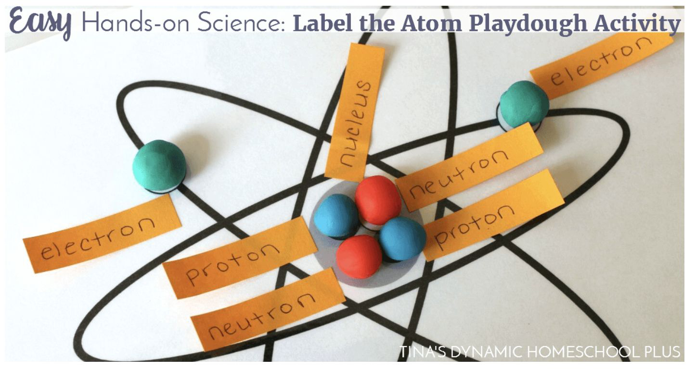
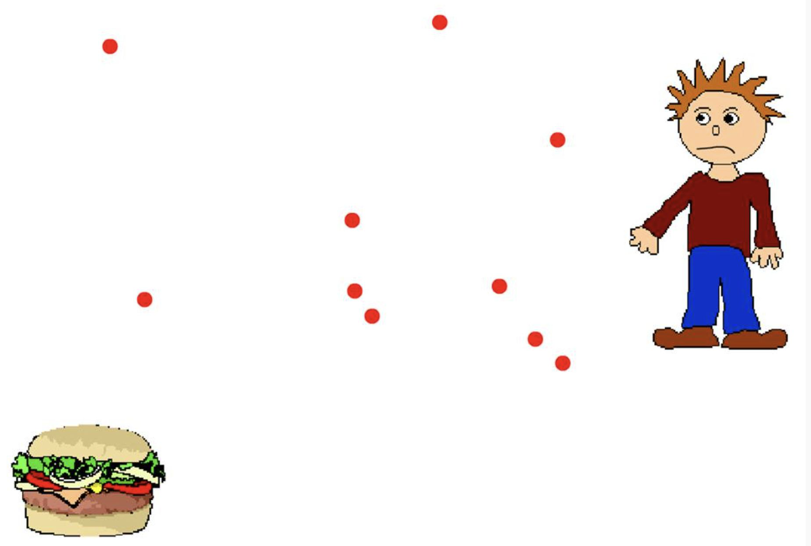

An atom is the smallest particle of an element that still has the properties of that element.
원자는 원소의 가장 작은 입자로, 그 원소의 성질을 그대로 가지고 있습니다.
Atoms are incredibly tiny — about 0.1 nanometres across (a million atoms fit in 1 mm).
원자는 매우 작아요 — 약 0.1나노미터 (1mm 안에 100만 개가 들어감).
The proton has a positive (+1) charge, mass of 1, and sits in the nucleus.
양성자(proton)는 (+1) 전하, 질량 1, 원자핵에 있습니다.
The neutron has no charge (0), mass of 1, and also sits in the nucleus.
중성자(neutron)는 전하 없음(0), 질량 1, 원자핵에 있습니다.
The electron has a negative (-1) charge, almost zero mass, and orbits the nucleus in shells.
전자(electron)는 (-1) 전하, 질량은 거의 0, 핵 주위 전자 껍질을 돕니다.

An atom has the same number of protons (+1) and electrons (-1).
원자는 양성자(+1)와 전자(-1)의 개수가 같습니다.
So the positive and negative charges cancel out, making the atom electrically neutral.
그래서 양·음 전하가 서로 상쇄되어 원자는 전기적으로 중성입니다.
The atomic number = number of protons in the nucleus. Each element has its own atomic number.
원자번호 = 원자핵 안 양성자 개수. 각 원소마다 고유합니다.
The mass number = number of protons + neutrons.
질량수 = 양성자 + 중성자 개수.
So: Neutrons = Mass number − Atomic number.
따라서: 중성자 = 질량수 − 원자번호.
Scientists could not see atoms directly, so they built models based on experiments.
과학자들은 원자를 직접 볼 수 없어서 실험을 바탕으로 모델을 만들었습니다.
As new evidence appeared, the model was improved — this is how science usually works.
새 증거가 나타날 때마다 모델이 개선되었습니다 — 과학은 보통 이렇게 발전합니다.
John Dalton proposed that atoms are tiny indivisible solid balls.
존 돌턴은 원자가 더 이상 쪼갤 수 없는 작고 단단한 공이라고 했습니다.
Each element has its own type of atom. (We now know atoms can be split, but this was a great start.)
각 원소마다 고유한 원자가 있다고 했습니다. (지금은 원자도 쪼갤 수 있다고 알고 있지만 시작점으로는 훌륭했습니다.)
J.J. Thomson discovered the electron.
J.J. 톰슨은 전자를 발견했습니다.
His plum pudding model: the atom is a ball of positive 'dough' with negative electrons stuck inside, like raisins in pudding.
그의 건포도 푸딩 모델: 원자는 양전하 '반죽' 안에 음전하 전자가 박혀 있는 모양 (푸딩 속 건포도처럼).
Ernest Rutherford's gold foil experiment: he fired tiny particles at a thin sheet of gold.
러더퍼드의 금박 실험: 얇은 금박에 작은 입자들을 쏘았습니다.
Most particles passed straight through, but a few bounced back.
대부분의 입자는 그대로 통과했지만, 몇 개는 튕겨 돌아왔습니다.
This proved there is a tiny dense positive nucleus in the centre, with mostly empty space around it.
이것은 중심에 작고 밀도 높은 양전하 원자핵이 있고, 주위는 거의 빈 공간임을 증명했습니다.
Niels Bohr said electrons orbit the nucleus in fixed shells (energy levels), not just anywhere.
닐스 보어는 전자가 어디나 도는 게 아니라 정해진 껍질(에너지 준위)을 따라 돈다고 했습니다.
This is the model we usually draw at Year 8.
이게 8학년에서 보통 그리는 모델입니다.
All matter is made of tiny particles. The arrangement and movement depends on the state.
모든 물질은 작은 입자로 이루어져 있습니다. 배열과 움직임은 상태에 따라 다릅니다.
Solid: particles packed tightly in a regular pattern; only vibrate.
고체: 입자가 규칙적으로 빽빽이 모여 있고, 진동만 합니다.
Liquid: particles touching but free to slide past each other.
액체: 입자가 서로 닿아 있지만 자유롭게 미끄러져 움직입니다.
Gas: particles are far apart and move very fast in all directions.
기체: 입자가 멀리 떨어져 있고 모든 방향으로 매우 빠르게 움직입니다.
Diffusion is the net movement of particles from a region of high concentration to a region of low concentration.
확산은 입자가 농도가 높은 곳에서 낮은 곳으로 이동하는 것입니다.
It happens in gases and liquids because particles are always moving.
입자가 항상 움직이는 기체와 액체에서 일어납니다.
Example: perfume sprayed in one corner of a room spreads until you can smell it everywhere.
예: 방 한쪽에서 뿌린 향수가 퍼져서 어디서든 냄새가 납니다.
Diffusion is faster at higher temperatures, because particles have more kinetic energy.
온도가 높을수록 입자가 운동에너지가 커서 확산이 빨라집니다.

When we look at smoke or dust particles under a microscope, they appear to jiggle randomly.
현미경으로 연기·먼지 입자를 보면 무작위로 떨립니다.
This is because invisible air molecules are constantly bumping into them.
보이지 않는 공기 분자가 계속 부딪치기 때문입니다.
This is evidence that gas particles are real and always moving.
이것은 기체 입자가 실제로 존재하고 항상 움직인다는 증거입니다.
Gas particles move fast in all directions and constantly collide with the container walls.
기체 입자는 모든 방향으로 빠르게 움직이며 용기 벽에 계속 부딪칩니다.
Each collision pushes on the wall — millions of collisions per second add up to gas pressure.
각 충돌이 벽을 밀고, 초당 수백만 번의 충돌이 합쳐져 기체 압력이 됩니다.
More collisions, or harder collisions = higher pressure.
충돌이 더 많거나 더 강하면 = 압력이 더 높습니다.
When you heat a gas in a sealed container, the particles gain kinetic energy and move faster.
밀폐된 용기 안 기체를 가열하면 입자가 운동 에너지를 얻어 더 빠르게 움직입니다.
They collide with the walls more often and with more force.
벽에 더 자주 그리고 더 강하게 부딪칩니다.
So gas pressure increases. (This is why a sealed can can burst if heated!)
그래서 기체 압력이 증가합니다. (밀폐된 캔이 가열되면 터지는 이유!)
If you squeeze a gas into a smaller volume (at the same temperature), the particles have less space.
같은 온도에서 기체를 더 작은 부피로 압축하면 입자가 공간이 적어집니다.
They collide with the walls more often, so pressure increases.
벽에 더 자주 부딪치므로 압력이 증가합니다.
This is why a bicycle pump gets harder to push as you compress the air inside.
자전거 펌프 안 공기를 압축할수록 누르기 힘들어지는 이유입니다.
The proton has a positive (+1) charge, a mass of 1 and is found in the nucleus.
양성자는 (+1) 전하, 질량 1, 원자핵에 있습니다.
The neutron has no charge (0), a mass of 1 and is also in the nucleus.
중성자는 전하 없음(0), 질량 1, 원자핵에 있습니다.
The electron has a negative (-1) charge, almost zero mass, and orbits the nucleus in electron shells.
전자는 (-1) 전하, 질량 거의 0, 전자 껍질을 따라 핵 주위를 돕니다.
The atomic number equals the number of protons: 6.
원자번호는 양성자 개수와 같으므로 6.
The mass number equals protons + neutrons: 6 + 6 = 12.
질량수는 양성자+중성자이므로 6+6 = 12.
An atom has the same number of protons (+1 each) and electrons (-1 each).
원자는 양성자(각 +1)와 전자(각 -1)의 개수가 같습니다.
The positive and negative charges cancel out, so the total charge is zero — the atom is neutral.
양·음 전하가 상쇄되어 총 전하가 0 — 원자는 중성입니다.
Rutherford fired tiny positive particles (alpha particles) at a very thin sheet of gold foil.
러더퍼드는 매우 얇은 금박에 작은 양전하 입자(알파 입자)들을 쏘았습니다.
Most particles passed straight through, but a few bounced back at large angles.
대부분의 입자는 곧장 통과했지만, 몇 개는 큰 각도로 튕겨 돌아왔습니다.
This showed that the atom is mostly empty space, but contains a tiny dense positive nucleus in the centre.
이것은 원자가 대부분 빈 공간이지만 중심에 작고 밀도 높은 양전하 핵이 있다는 것을 보여주었습니다.
The positive nucleus repelled the positive alpha particles, causing some to bounce back.
양전하 핵이 양전하 알파 입자를 밀어내서 일부가 튕겨 돌아온 것입니다.
When the gas is heated, the particles gain kinetic energy and move faster.
가열되면 기체 입자는 운동 에너지를 얻어 더 빠르게 움직입니다.
The particles collide with the container walls more frequently.
입자가 용기 벽에 더 자주 부딪칩니다.
The collisions are also more forceful because the particles move faster.
입자가 더 빠르므로 충돌이 더 강력합니다.
So the total force on the walls increases — meaning the pressure increases.
벽에 가해지는 힘이 커지므로 압력이 증가합니다.
Diffusion is the net movement of particles from a region of high concentration to a region of low concentration.
확산은 입자가 농도가 높은 곳에서 낮은 곳으로 이동하는 것입니다.
At higher temperatures, the particles have more kinetic energy and move faster.
온도가 높을수록 입자는 운동 에너지가 커서 더 빠르게 움직입니다.
Faster-moving particles spread through the area more quickly, so diffusion happens faster.
빠른 입자가 더 빨리 퍼지므로 확산도 빨라집니다.